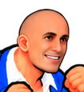
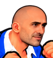
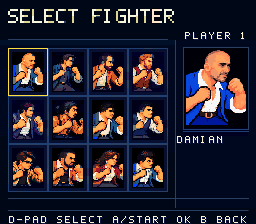
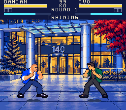
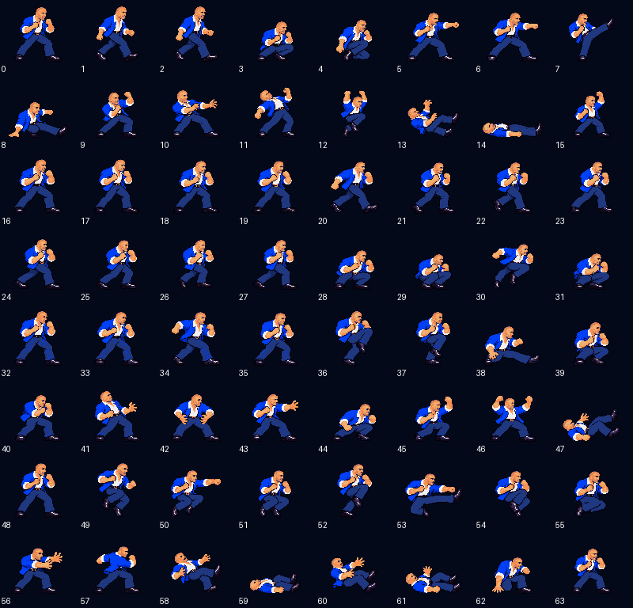

Longer nose, darker brows, narrower mouth and short stubble. The blue suit and all 64 pose roles are retained.
Native 64 × 80 portraits · enlarged with nearest pixels
Captured from the revised SNES ROM



v0.20.0 likeness review build · 35,715 native checks pass · revised likeness accepted by the user · 2026-10-22